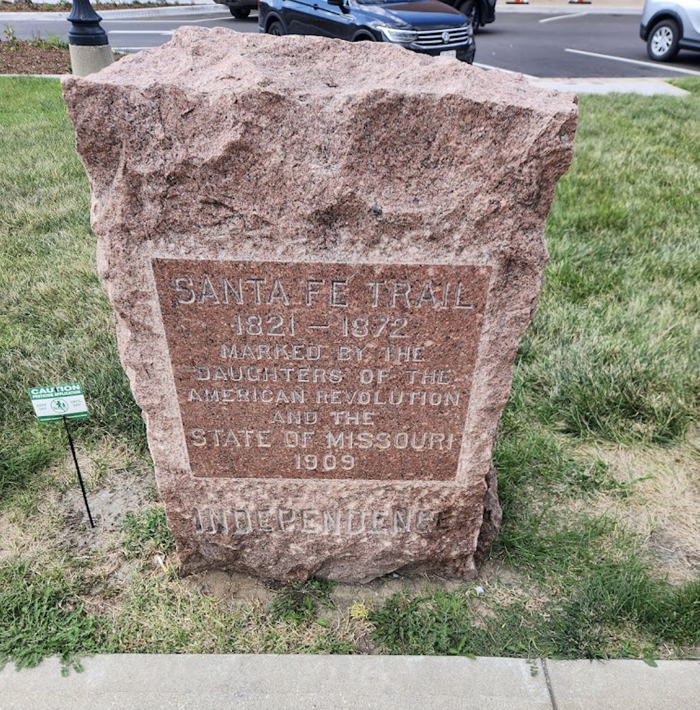
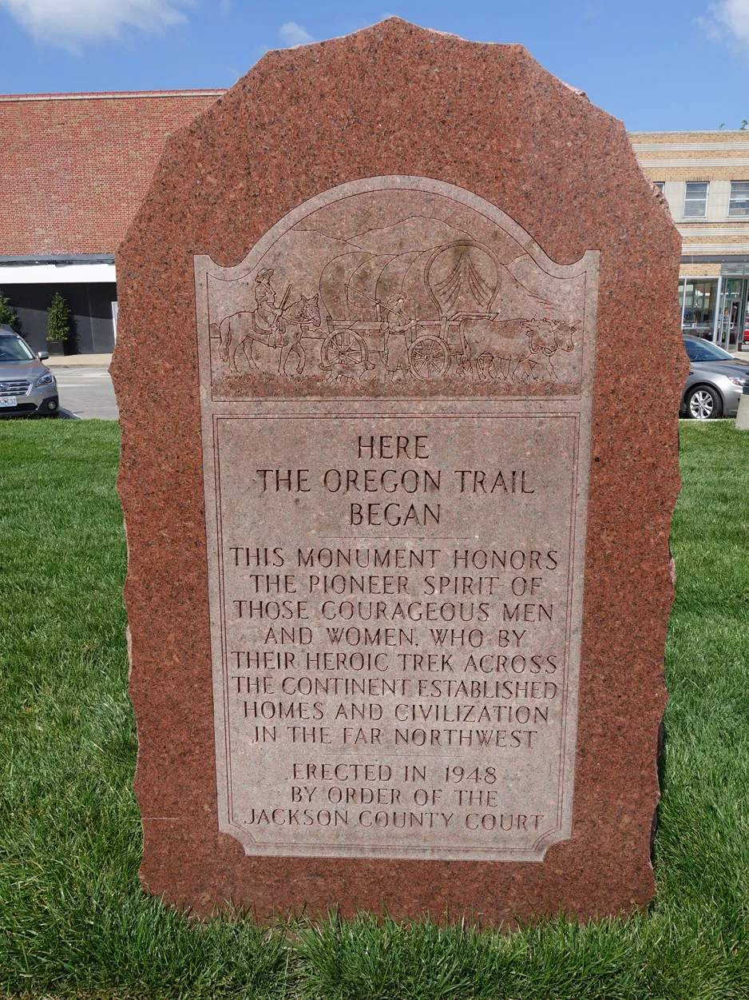
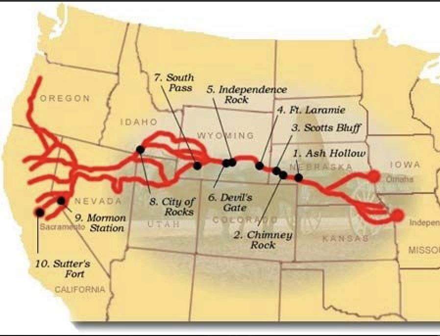
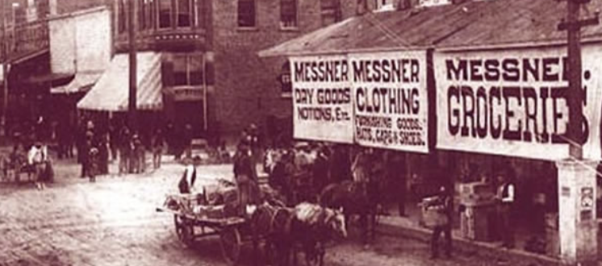

Founded in 1827, Independence Square is the historic heart of Independence, Missouri, acting as the structural anchor of Jackson County. During the 1800s, this urban core transformed into the ultimate outfitting terminal for America's westward expansion. Thousands of pioneers gathered here to assemble provisions, purchase freight wagons, and cross paths before advancing into uncharted territories. Having survived strategic urban battles during the American Civil War and serving as the foundational launchpad for President Harry S. Truman's legal and political career, the Square elegantly marries preservation with modern commerce.
Find where the historic paths meet at the crossroads of downtown Independence.
Explore the historic pathways that converged right at the Square's courtyard — the outfitting point for a nation heading west.

Operating as a high-stakes commercial artery between Missouri and Mexican markets, this trail brought massive economic trade wealth directly to early Square merchants, outfitting heavy freight wagon trains packing out items across hazardous desert stretches.

The definitive pathway of mass emigration traveled by pioneer families seeking agricultural fortunes in the Pacific Northwest. Families packed provisions, cattle, and survival kits right here in the historic district before braving a brutal 2,000-mile journey.


Sparked by the historic gold discoveries at Sutter's Mill, this trail flooded the local municipal infrastructure with thousands of frantic "Forty-Niners." The Square transformed into an intense outfitting market for travelers racing to secure mules, oxen, and rations.
Click any operational covered wagon card below to open its specific rates, durations, and historical itineraries. For registration call 816-254-2466
Launch an interactive, point-by-point timeline exploring the structural architecture and historic culinary places of the Square.
Filter or search dynamically through all architectural assets and retail points across the district grid.